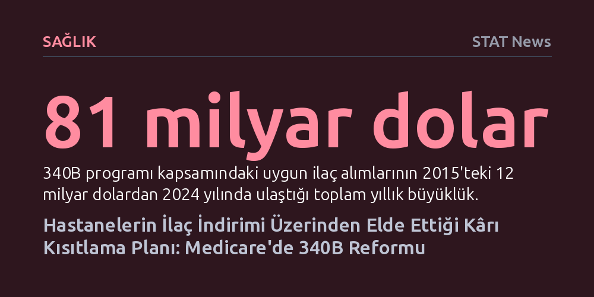

SAGLIK · STAT News · 2026-10-09
ABD Sağlık Bakanlığı, hastanelerin ucuza alıp devlete pahalıya fatura ettiği 340B kapsamındaki ilaçların geri ödeme oranını 2027'de yüzde 33,4 düşürmeyi teklif etti. Düzenlemenin ilk yılda Medicare harcamalarını 4,55 milyar dolar, hasta katkı paylarını ise 1,15 milyar dolar azaltması bekleniyor.
Yoksul hastaları desteklemek amacıyla kurulan bir indirim sisteminin hastane tekelleşmesini ve pahalı ilaç kullanımını nasıl teşvik ettiğini gözler önüne seriyor.

ABD Kongresi, 1992 yılında düşük gelirli ve güvencesiz hastalara hizmet veren kamu ve güvenlik ağı hastanelerini mali açıdan desteklemek için 340B isimli ilaç indirim programını hayata geçirdi. Sistem gereği ilaç üreticileri bu hastanelere çok yüksek oranlarda indirim uygulamak zorundaydı. Fakat sistemin işleyişinde kritik bir açık vardı: Medicare, Medicaid ve özel sigorta şirketleri, hastanenin ilacı ne kadara aldığına bakmaksızın geri ödemeyi tam tarife üzerinden yapıyordu.
Bu durum, hastanelerin ilacın indirimli alış fiyatı ile sigortadan aldıkları geri ödeme arasındaki devasa farkı kendi kasalarında tutmalarına yol açtı. İlacın liste fiyatı ne kadar yüksekse, hastanenin elde ettiği kâr marjı da o denli büyüyordu. Neticede matematiksel olarak akıl almaz bir tablo ortaya çıktı: Kimi Medicare hastalarının ödemek zorunda kaldığı yüzde 20'lik sigortalı katkı payı, hastanenin o ilaç için üreticiye ödediği toplam bedelin dahi üzerine çıktı.
Zaman içinde 340B programı amacını aşarak devasa bir finansal mekanizmaya dönüştü. Programa uygun ilaç alımları 2015 yılında 12 milyar dolar seviyesindeyken, 2024 yılına gelindiğinde 81 milyar dolara fırladı. Bu hacim, ABD'nin kamu sağlık sigortası programları olan Medicare Part B ve Medicaid'in toplam net ilaç harcamalarını bile geride bıraktı.
Söz konusu yüksek marj, hastanelerin davranış kalıplarını kökten değiştirdi. Hastane yönetimleri, tedaviyi değiştirmeksizin yalnızca faturalandırma merkezini değiştirebilmek için bağımsız muayenehaneleri ve infüzyon kliniklerini hızla bünyelerine katmaya başladı. 2013'te yaklaşık 7 bin olan hastaneye bağlı kampüs dışı klinik sayısı, 2023 itibarıyla 34 binin üzerine çıktı. Üstelik bu yeni klinikler yoksul bölgelerde değil, çoğunlukla daha varlıklı ve iyi sigortalanmış semtlerde açıldı. Benzer şekilde, programa dahil edilen anlaşmalı eczane sayısı da 2010'daki 1.300 civarından 2026 ortasında büyük zincirlerin hakimiyetindeki 31 binin üzerine tırmandı. Büyüyen hastane tekelleri hem sigortalara daha yüksek hizmet bedelleri dayattı hem de sisteme fazladan 'tesis ücretleri' ekleyerek genel sağlık maliyetlerini şişirdi.
Medicare poliklinik ilaç geri ödemelerinde standart formül 'ortalama satış fiyatı artı yüzde 6' (ASP + %6) şeklinde işliyor. 2018 yılında federal yönetim bu farkı kapatmak amacıyla 340B kapsamındaki hastanelere yapılan ödemeyi 'ASP eksi yüzde 22,5' seviyesine indirdi. Bu hamle hemen sonuç verdi; 2015-2017 arasında yılda yaklaşık yüzde 15 artan poliklinik ilaç harcamaları bir anda dengelendi ve yıllık ödemeler 7 milyar dolar bandında sabitlendi.
Ancak 2022'de ABD Yüksek Mahkemesi, bakanlığın hastanelere yönelik bu indirimi yapmadan önce yasada belirtilen resmi edinim maliyeti anketini tamamlamadığı gerekçesiyle kararı usulden bozdu. Mahkeme hastanelerin bu kârı hak ettiğini söylememiş, yalnızca idari bir eksikliğe işaret etmişti. Eski yüksek tarife sistemine dönülmesiyle birlikte, etkilenen ilaçlar için yıllık ödemeler 2021'deki 7,1 milyar dolardan 2023'te 10,7 milyar dolara fırlayarak iki yılda 3,6 milyar dolar arttı. Hastanelerin aynı ilacı verip daha pahalı fatura kesmesinin ve daha pahalı ilaçları tercih etmesinin faturası yine kamuya ve hastalara kesildi.
Yüksek Mahkeme'nin işaret ettiği usul şartını yerine getirmek için 2025'te verilen talimat doğrultusunda Medicare ve Medicaid Hizmetleri Merkezi (CMS), 2026 başında hastanelerin gerçek ilaç alım maliyetlerini kapsayan kapsamlı bir anket gerçekleştirdi. Elde edilen veriler ışığında CMS, 2027 yılından itibaren 340B hastanelerine yapılacak ilaç geri ödemelerini 'ortalama satış fiyatı eksi yüzde 33,4' seviyesine çekmeyi önerdi.
Yetkililerin projeksiyonlarına göre bu yeni oran, ilk yılında Medicare'in toplam ilaç ödemelerini 4,55 milyar dolar düşürecek. Daha da önemlisi, doğrudan hastaların cebinden çıkan katkı paylarında yıllık 1,15 milyar dolarlık rahatlama sağlanacak. Örneğin ortalama satış fiyatı 1.000 dolar olan bir ilaç için yaşlı bir hastanın ödeyeceği pay 212 dolardan 133,20 dolara inecek. Yetkililerin vurguladığı temel prensip oldukça net: "Medicare hastaları indirim hiç yokmuş gibi katkı payı ödememeli." Yeni kural, aynı zamanda hastanelerin sırf marj elde etmek için özel muayenehaneleri bünyesine katma ve hastaları pahalı ilaçlara yönlendirme iştahını da zayıflatmayı hedefliyor.